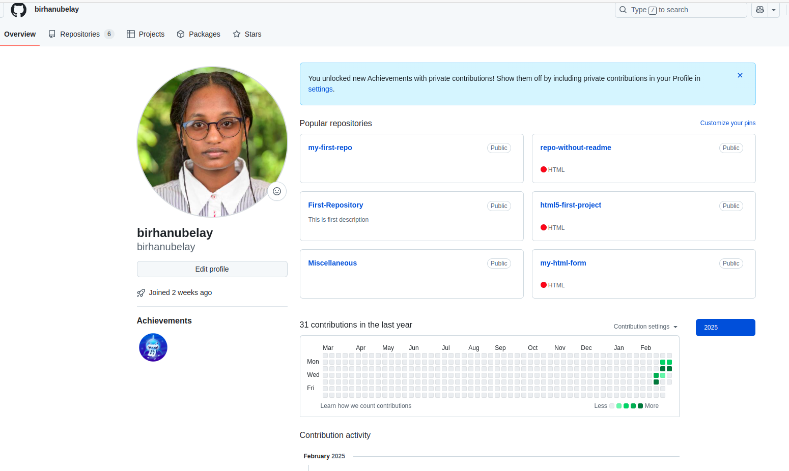

Introduction
My name is Birhanu, a student at Akirachix. I came from Ethiopia, specifically northern part of Ethiopia.I came to AkiraChix 26 days ago. During those days, I have gained new knowledge I had never known. All the courses what I have learnt were new concepts to me.

The following are the main points what I have learned from each courses.
1. product management
- Using Gmail
- Google Docs
- Google Sheet
- Google calander
- Google meeting
- persona
2. Quality Assurance
- Definition of quality assurance
- Software development life cycle
- Models of SDLC
- Waterfall model
- Agile model
- V-model
- Test case
- Test plan
- Test strategy
3. Backend
- Definition of programming language
- Operating system
- Linux operating system
- Linux commands
- Directory commands
- File commands
- Introduction to python programming
- Key features of python
- Python interpreter
- Versions of python
- Python operators
- Arthimetic operators
- Assignment operators
- Comparison operators
4. Fronted Web
- Github
- Creating Github account
- Creating repository on Github
- Cloning repository to local machine
- Adding files to repository on git
- Commiting changes
- Pushing commits to a remote repository
- Introduction to html
- Tags and elements of html
- Forms and tables
The folloowing picture shows what I have done on my Github account.

5. UX Research
- Definition Ux research
- Types of research
- Generative research
- Explarotary research
- Descriptive research
- Evaluative research
- Research methods
6. Navigating Your Journey(NYJ)
- Building oneself from scrach
- Introducing oneself
- personal hygiene
- Values at AkiraChix
- Preparing events
7. UX/UI Design
- Elements in design
- Color
- Shape
- Space
- Texture
- principles in design
- Balance
- Contrast
- White space
- Lesso
8. DAS
- computer components
- The connection between computer components
- Binary system
- Data types
9. Fronted Mobile
- Introduction to Git
- Setting up git
- Git commands
- Kotlin
- Kotlin variables and data types
- Kotlin operators
Conclusion
Generally, the things what I have learnt within 26 days are a lot. These are our basic inspiration to do and learn more. Besides the educational curriculum, AkiraChix principles and guidelines taught me how to organize myself.
Thank you!